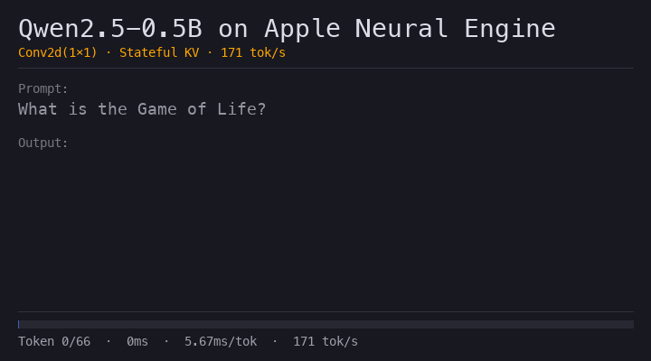
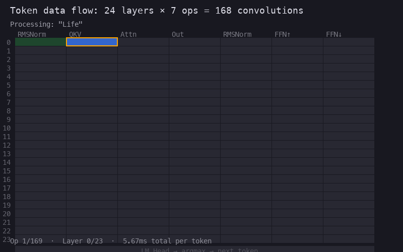

Qwen 2.5‑0.5B running entirely on the ANE — every matrix multiply is a Conv2d(1×1). 171 tok/s, no GPU.
Conv2d(1×1).
Apple’s Neural Engine is a hardware convolution accelerator present in every Apple Silicon chip. Unlike the GPU—which runs arbitrary parallel kernels—the ANE achieves peak throughput on a narrow set of operations: small-kernel convolutions, element-wise arithmetic, and activation functions.
Most LLM inference engines ignore the ANE entirely. This project shows that a transformer can run on it with zero approximation—by expressing every matrix multiplication as a Conv2d(1×1) convolution.
A transformer processes one token at a time through a stack of identical layers. Each layer performs five steps: normalize (RMSNorm), project to Q/K/V, attend, project output, and feed-forward network. After 24 layers, a final projection maps the 896-dimensional vector to 151,936 vocabulary logits.
The key observation: all the expensive operations are matrix–vector products y = Wx. The nonlinearities (SiLU, softmax, RMSNorm) are element-wise and cheap.
Conv2d(1×1) = Matrix MultiplyWhen spatial dimensions are 1×1, a convolution degenerates to a weighted sum across input channels, repeated for each output channel. That is exactly matrix–vector multiplication:
We reshape the transformer’s hidden state from shape (896,) to (1, 896, 1, 1) — 896 “channels” of a single 1×1 “image”. A Conv2d(896, 1152, kernel_size=1) then produces the QKV projection. No approximation — the operations are mathematically identical.
| Layer | Matrix Shape | Conv2d |
|---|---|---|
| QKV projection | 896 → 1152 | Conv(896, 1152, 1) |
| Output projection | 896 → 896 | Conv(896, 896, 1) |
| Gate + Up | 896 → 9728 | Conv(896, 9728, 1) |
| Down projection | 4864 → 896 | Conv(4864, 896, 1) |
| LM head | 896 → 151936 | Conv(896, 151936, 1) |
169 matrix multiplications per token (7 per layer × 24 layers + LM head), all dispatched to the ANE’s convolution engine.

The initial conv-only implementation produced coherent output at 9 tok/s. Four targeted optimizations delivered a 19× improvement:
| Step | What Changed | tok/s | Speedup |
|---|---|---|---|
| Baseline | Conv-only model, naïve host code | 9 | 1× |
| Book-driven fixes |
Eliminated per-token allocations, fused KV scatter, batched GQA (672 → 96 attention matmuls) |
90 | 10× |
| Pre-allocated buffers | Reuse MLMultiArray across tokens (pack 0.4%, ANE 99.5%) | 90 | — |
| Fixed-shape model | Compile with static shapes, skip dynamic padding | 78 | — |
| Stateful KV cache |
CoreML MLState — KV cache lives on ANE,zero host-side copy (macOS 15+) |
171 | 19× |
MLState API (macOS 15) keeps the KV cache on-device: the model writes to it in-place via registered state buffers. Pack time dropped from 23% to 0.00ms.

coremltools 9.0 → CoreML .mlpackageMLState (macOS 15+)